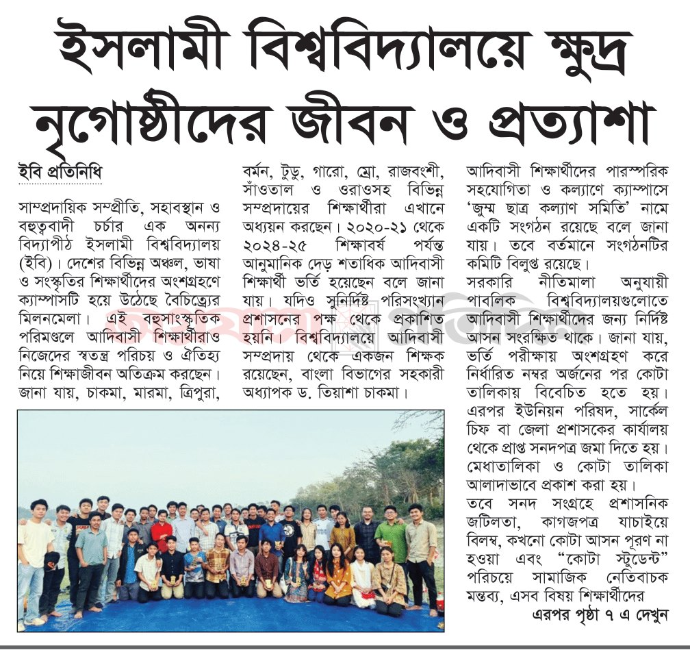

Other languages are machine-translated by Google.
ইসলামী বিশ্ববিদ্যালয়ে ক্ষুদ্র নৃগোষ্ঠীদের জীবন ও প্রত্যাশা
Life and Aspirations of Indigenous Communities at IU

সাম্প্রদায়িক সম্প্রীতি, সহাবস্থান ও বহুত্ববাদী চর্চার এক অনন্য বিদ্যাপীঠ ইসলামী বিশ্ববিদ্যালয় (ইবি)। দেশের বিভিন্ন অঞ্চল, ভাষা ও সংস্কৃতির শিক্ষার্থীদের অংশগ্রহণে ক্যাম্পাসটি হয়ে উঠেছে বৈচিত্র্যের মিলনমেলা। এই বহুসাংস্কৃতিক পরিমণ্ডলে আদিবাসী শিক্ষার্থীরাও নিজেদের স্বতন্ত্র পরিচয় ও ঐতিহ্য নিয়ে শিক্ষাজীবন অতিক্রম করছেন।
জানা যায়, চাকমা, মারমা, ত্রিপুরা, বর্মন, টুডু, গারো, ম্রো, রাজবংশী, সাঁওতাল ও ওরাওসহ বিভিন্ন সম্প্রদায়ের শিক্ষার্থীরা এখানে অধ্যয়ন করছেন। ২০২০-২১ থেকে ২০২৪-২৫ শিক্ষাবর্ষ পর্যন্ত আনুমানিক দেড় শতাধিক আদিবাসী শিক্ষার্থী ভর্তি হয়েছেন বলে জানা যায়। যদিও সুনির্দিষ্ট পরিসংখ্যান প্রশাসনের পক্ষ থেকে প্রকাশিত হয়নি। বিশ্ববিদ্যালয়ে আদিবাসী সম্প্রদায় থেকে একজন শিক্ষক রয়েছেন, বাংলা বিভাগের সহকারী অধ্যাপক ড. তিয়াশা চাকমা।
আদিবাসী শিক্ষার্থীদের পারস্পরিক সহযোগিতা ও কল্যাণে ক্যাম্পাসে ‘জুম্ম ছাত্র কল্যাণ সমিতি’ নামে একটি সংগঠন রয়েছে বলে জানা যায়। তবে বর্তমানে সংগঠনটির কমিটি বিলুপ্ত রয়েছে।
সরকারি নীতিমালা অনুযায়ী পাবলিক বিশ্ববিদ্যালয়গুলোতে আদিবাসী শিক্ষার্থীদের জন্য নির্দিষ্ট আসন সংরক্ষিত থাকে। জানা যায়, ভর্তি পরীক্ষায় অংশগ্রহণ করে নির্ধারিত নম্বর অর্জনের পর কোটা তালিকায় বিবেচিত হতে হয়। এরপর ইউনিয়ন পরিষদ, সার্কেল চিফ বা জেলা প্রশাসকের কার্যালয় থেকে প্রাপ্ত সনদপত্র জমা দিতে হয়। মেধাতালিকা ও কোটা তালিকা আলাদাভাবে প্রকাশ করা হয়।
তবে সনদ সংগ্রহে প্রশাসনিক জটিলতা, কাগজপত্র যাচাইয়ে বিলম্ব, কখনো কোটা আসন পূরণ না হওয়া এবং “কোটা স্টুডেন্ট” পরিচয়ে সামাজিক নেতিবাচক মন্তব্য, এসব বিষয় শিক্ষার্থীদের জন্য চ্যালেঞ্জ হয়ে দাঁড়ায়।
জানা যায়, হল সিট বরাদ্দে রাজনৈতিক প্রভাবের অভিযোগ রয়েছে। দূরবর্তী পার্বত্য অঞ্চল থেকে আগত শিক্ষার্থীরা নীতিগতভাবে অগ্রাধিকার পাওয়ার কথা থাকলেও বাস্তবে সিট পেতে দেরি হয়। সাংস্কৃতিক পার্থক্যের কারণে অনেক সময় মানসিক অস্বস্তিও তৈরি হয়।
আদিবাসী শিক্ষার্থীদের সম্মিলিত দাবি, নির্দিষ্ট কক্ষ বা ব্লকের ব্যবস্থা করে নিরাপদ ও বৈষম্যহীন পরিবেশ নিশ্চিত করা। বিশেষ করে ছাত্রীদের ক্ষেত্রে খাদ্যাভ্যাস ও সাংস্কৃতিক ভিন্নতার কারণে নানা সমস্যার মুখোমুখি হতে হয় বলে জানা যায়।
ধর্মীয় ও সাংস্কৃতিক চর্চার ক্ষেত্রে জানা যায়, মুসলিম ও হিন্দু শিক্ষার্থীদের জন্য মসজিদ ও মন্দির থাকলেও বৌদ্ধ শিক্ষার্থীদের জন্য আলাদা বিহার নেই। এছাড়া তাদের গুরুত্বপূর্ণ ধর্মীয় উৎসব, বিশেষ করে বৈসাবি, বিঝু, ওয়াংগালা প্রভৃতি উৎসবে একাডেমিক কার্যক্রম বন্ধ থাকে না বলেও অভিযোগ রয়েছে। নিজস্ব রান্না বা ঐতিহ্যবাহী খাবারের সুযোগও সীমিত। ধর্মীয় আচার পালন কিংবা ঐতিহ্যবাহী পোশাক ও উৎসব উদযাপনে কখনো কটূক্তির শিকার হওয়ার অভিযোগও রয়েছে। এ বিষয়ে প্রশাসনিক সহযোগিতা ও একাডেমিক কার্যক্রমে নমনীয়তার দাবি জানিয়েছেন শিক্ষার্থীরা।
প্রতি বছর ৯ আগস্ট আন্তর্জাতিক আদিবাসী দিবস অন্যান্য বিশ্ববিদ্যালয়ে পালন হলেও ইসলামী বিশ্ববিদ্যালয়ে পালিত হয় না বলে জানা যায়। এ বিষয়ে দিবসটি পালনের সুযোগ দেওয়ার দাবি রয়েছে।
সনদ যাচাই, বৃত্তি পেতে বিলম্ব, হল সিট সমস্যা, এসব প্রশাসনিক জটিলতার কথাও জানা যায়। পড়াশোনা শেষে চাকরিক্ষেত্রে বৈষম্যের আশঙ্কা, কর্পোরেট সেক্টরে সাংস্কৃতিক পরিচয় নিয়ে অস্বস্তি এবং নিজ এলাকায় পর্যাপ্ত কর্মসংস্থানের অভাবও চ্যালেঞ্জ হিসেবে দেখা দেয়।
সাম্প্রতিক বছরগুলোতে কোটা নীতি ও সচেতনতা বৃদ্ধির ফলে ভর্তি সংখ্যা কিছুটা বেড়েছে। তবে পার্বত্য অঞ্চলে শিক্ষার সুযোগ সীমিত থাকায় সামগ্রিক অনুপাত এখনো কম। এলামনাইয়ের নির্দিষ্ট পরিসংখ্যান না থাকলেও বিভিন্ন বিভাগ থেকে পাস করা শিক্ষার্থীরা বিসিএস ও অন্যান্য ভালো অবস্থানে রয়েছেন বলে জানা যায়।
২০২৪-২৫ শিক্ষাবর্ষের অ্যাপ্লাইড কেমিস্ট্রি অ্যান্ড কেমিক্যাল ইঞ্জিনিয়ারিং বিভাগের শিক্ষার্থী সুকীর্তি চাকমা বলেন, “আমাদের জন্য হলে সিট বরাদ্দ দিয়ে শতভাগ আবাসিকতা নিশ্চিত করা প্রয়োজন। আমাদের ধর্মীয় ও সাংস্কৃতিক উৎসব পালনের পরিবেশ তৈরি করা দরকার। বিশেষ করে বিঝু উৎসবে একাডেমিক কার্যক্রম বা পরীক্ষা না রাখার বিষয়টি বিবেচনা করা উচিত। পাশাপাশি আমাদের সেইফটি কনসার্ন, বিশেষ করে মেয়েদের নিরাপত্তা নিশ্চিত করা প্রয়োজন।”
২০২৩-২৪ শিক্ষাবর্ষের কমিউনিকেশন অ্যান্ড মাল্টিমিডিয়া জার্নালিজম বিভাগের শিক্ষার্থী সুমনা চাকমা বলেন, “কোটা আমাদের ন্যায্য অধিকার। আমরা যে অবস্থা থেকে উঠে আসি সেদিক দিয়ে বিবেচনা করলে এত দূর আসাটাই অনেক বড় অর্জন। আমরা সাধারণ শিক্ষার্থীদের মতো সমান সুযোগ চাই। আমাদের সংস্কৃতি ও পরিচয়কে সম্মান জানিয়ে শিক্ষা গ্রহণের পরিবেশ চাই। বিশ্ববিদ্যালয় হোক বৈচিত্র্যের মিলনমেলা। যেখানে সকল জাতি, ধর্ম ও সংস্কৃতি সমান মর্যাদা পাবে।”
জুম্ম ছাত্র কল্যাণ সমিতির সাবেক সাধারণ সম্পাদক পিকাসু চাকমা জানান, “প্রশাসন যদি হলে সিট প্রদানের ক্ষেত্রে আরও সুদৃষ্টি দিতো তাহলে আমাদের জন্য সুবিধার হতো। কিছু সময় ক্যাম্পাসে বুলিংয়ের স্বীকার হতে হয়। এছাড়া তেমন বড় কোনো অসুবিধা নেই।”
প্রভোস্ট কাউন্সিলের সভাপতি অধ্যাপক ড. মো. জালাল উদ্দিন বলেন, “আমরা শিক্ষাবর্ষভিত্তিক হলে আবেদনের ভিত্তিতে আসন বন্টন করে থাকি। এক্ষেত্রে মেয়েদের হলে ক্ষুদ্র নৃগোষ্ঠীদের আবেদন তুলনামূলক কম হয়ে থাকে। তবে তাদেরকে আমরা সিট বন্টনের ক্ষেত্রে অগ্রাধিকার দিয়ে থাকি।”
বৈচিত্র্যময় ক্যাম্পাসে অন্তর্ভুক্তিমূলক নীতিমালা ও সহায়ক পরিবেশ নিশ্চিত করা গেলে আদিবাসী শিক্ষার্থীদের অংশগ্রহণ ও অবদান আরও সমৃদ্ধ হবে বলে মনে করছেন সংশ্লিষ্টরা।